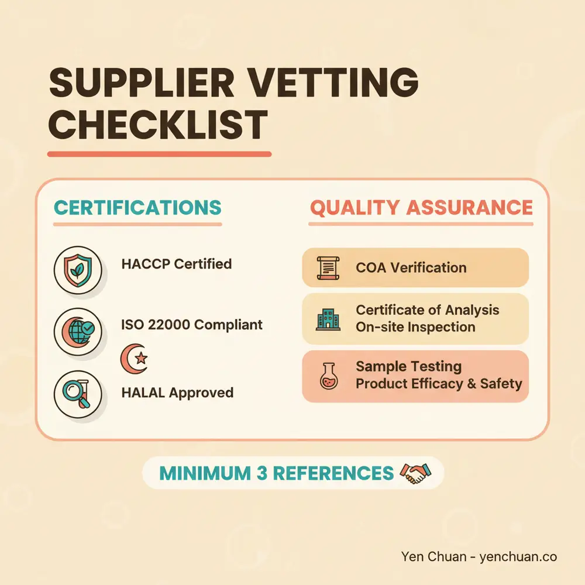
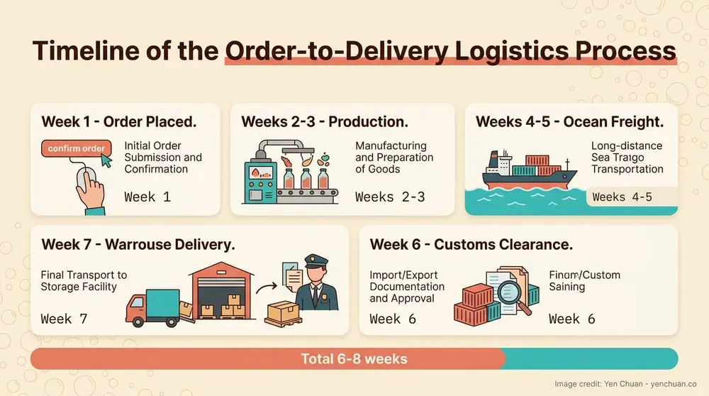

Articles / Business & sourcing
Milk Tea Supplier Guide: Quality, Pricing & Logistics
2026-03-17 · Sourcing, Business

Finding the right milk tea supplier isn't just about getting the lowest price. It's about securing consistent quality, fair terms, and reliable delivery—the three pillars that keep your business stable and profitable.
This guide covers everything: evaluating supplier credentials, negotiating contracts that favor your business, managing complex imports, and spotting red flags before they hurt you.
How to Evaluate Supplier Quality
Quality starts with documentation. A supplier serious about food safety maintains multiple certifications and backs them up with evidence.
Certifications That Matter
Look for these industry-standard credentials:
- ISO 22000 / FSSC 22000: International food safety management standards. These show structured quality control processes.
- HACCP / BRCGS: Hazard analysis and preventive controls. Suppliers with these actively test and monitor contamination risks.
- ISO 9001:2015: Quality management systems. This covers consistency across every batch.
- SALSA / ISO 14001: Additional layer for food safety and environmental responsibility.
- FDA, Kosher, Halal: Market-specific certifications for compliance and consumer trust.
Don't accept generic or outdated certificates. Request the current version, issue date, and expiration date. Cross-check against the certifying body's registry when possible.
Certificates of Analysis (COA)
Every ingredient lot should include a COA—a laboratory report showing what's actually in the product.
Your supplier should provide: - Microbiological results (pathogens, e.g., E. coli, Salmonella) - Chemical testing (pesticide residues, heavy metals) - Physical specifications (color, moisture content, particle size) - Lot numbers and production dates - Third-party verification (SGS, Eurofins, TTES certify these)
Always compare COAs across batches. Consistency signals quality control. Large variances between lots suggest inconsistent sourcing or poor process management.
Factory Audits and On-Site Inspection
Visit or arrange a virtual walkthrough of the supplier's production facility. Reputable suppliers encourage this.
During an audit, observe: - Production environment: Clean floors, organized storage, no cross-contamination risks - Temperature and humidity control: Critical for powders, syrups, and tea leaves - Equipment maintenance: Regular calibration of scales, testing equipment, pasteurization units - Documentation: Batch records, supplier audits for their raw materials, traceability systems - Staff training: Employees should explain their quality procedures confidently
Red flags include locked areas you can't access, reluctance to answer questions, outdated equipment, or staff unfamiliar with quality protocols.
Sample Testing and Shelf-Life Verification
Request samples before placing large orders. Test them: - Taste and aroma: Does it match your previous supplier or competitor benchmarks? - Texture: Pearls should hold up under normal storage; powders should dissolve evenly - Color stability: Some syrups and teas fade quickly under light or heat - Shelf life: Ask how long products remain stable at typical warehouse conditions (room temperature, moderate humidity)
Ask the supplier for stability data. Temperature-sensitive items like boba pearls and cream powder require specific storage guidance. Confirm expiration dates align with your inventory turnover.

Negotiating Pricing and Payment Terms
Price matters, but volume, loyalty, and payment reliability matter more. Suppliers reward committed buyers.
Minimum Order Quantities (MOQ)
MOQ is your first negotiating point. Most suppliers set MOQs at 500–2,000 kg per ingredient to justify production runs.
Strategies to reduce or waive MOQs: - Commit to annual volume: If you commit to 10,000 kg yearly, suppliers often reduce per-order minimums. - Combine SKUs: Order multiple product types (tea, pearls, syrup) to hit volume thresholds faster. - Lock in a contract: Annual or multi-year contracts give suppliers predictability, reducing their risk. - Share demand forecasts: Transparent planning helps suppliers manage production schedules.
New buyers often negotiate first orders with 10–20% higher unit costs. Once you prove consistent payment and repeat business, pricing drops.
Annual Pricing Agreements
Price-lock contracts protect you from agricultural commodity swings. Tea, for example, fluctuates 15–25% seasonally due to crop yields.
Structure a framework agreement with: - Fixed base price for the first 6 months - Price adjustment mechanisms tied to commodity indexes (e.g., +/- 5% if global tea prices move beyond a range) - Volume discounts: 5% off at 5,000 kg annually; 10% off at 10,000 kg - Minimum margin: Supplier commits to not charging more than X% above their cost
Most suppliers are comfortable with these terms because they reduce pricing disputes.
Payment Terms and Currency
Standard terms are Net-30 (pay 30 days after invoice). Negotiate based on your cash flow:
- 2/10 Net-30: 2% discount if you pay within 10 days; otherwise 30 days
- LC (Letter of Credit): Supplier ships when your bank guarantees payment. Costs 1–2% in fees but protects both parties on large orders
- T/T prepayment: You wire funds upfront. Suppliers may offer 3–5% discounts for this certainty
Currency matters. If you're in USD and suppliers are in Asia (CNY, TWD, THB), lock in rates or negotiate a currency clause that adjusts prices if exchange rates shift beyond ±5%.
Logistics: From Order to Delivery
International shipping adds complexity. A single misstep—wrong packaging, missed customs documents, temperature exposure—can spoil an entire container.
Freight Options and Incoterms
Ocean Freight (Sea): Cost-effective for bulk orders. A 20-foot container costs $1,500–$4,000 depending on origin, destination, and season. Transit time: 2–4 weeks Asia to North America.
Air Freight: 5–7x more expensive but 24–72 hours. Use only for emergency restocks or high-value items.
Incoterms determine responsibility: - FOB (Free on Board): Supplier delivers to port; you arrange freight, insurance, customs. You own risk from port onward. Best if you have a freight forwarder. - CIF (Cost, Insurance, Freight): Supplier arranges everything to your port. Easier but 3–5% more expensive. - DDP (Delivered Duty Paid): Supplier handles everything including customs and duties. Most expensive but simplest.
For consistent orders, negotiate FOB + use the same freight forwarder. Consolidating shipments reduces per-unit logistics costs by 15–25%.
Customs Documentation
Mistakes here delay shipments weeks. Ensure your supplier provides: - Packing list: Exact contents, weight, dimensions of each box - Commercial invoice: Value, currency, payment terms - Certificate of Origin: Proves country of manufacture (affects duties) - Sanitary certificate: For food items; shows compliance with destination country regulations - Bill of lading: Proof of shipment from freight forwarder
Work with a customs broker if this is new to you. They cost $300–$500 per shipment but prevent costly errors.
Inventory Planning and Cold Chain Management
Temperature-sensitive items (pearls, powders, certain syrups) degrade quickly in heat and humidity.
Plan your inventory to match consumption: - Fast-moving items (basic teas, popular syrups): Order every 4–6 weeks - Seasonal items (fruit syrups, specialty powders): Build 6–8 week buffer before peak seasons - Niche or test items: Small frequent orders until demand is proven
Cold chain best practices: - Ship with temperature-controlled containers (insulated + ice packs) in summer months - Store in climate-controlled space: 60–75°F, 45–60% humidity ideal - Use FIFO (First In, First Out) to prevent items aging in storage - Test samples from the bottom and middle of containers—suppliers sometimes place fresh product on top

Red Flags: When to Walk Away
Some issues are deal-breakers. Don't ignore them hoping they'll improve.
Reluctance to provide documentation: If a supplier avoids sharing COAs, certifications, or factory information, walk away. Legitimate suppliers have nothing to hide.
Generic or unverified certificates: Check the certifying body's website. A "Global Quality Certificate" from an unknown entity means nothing.
Inconsistent lot numbers or quality: One batch tastes great; the next is off. This signals poor quality control or fraudulent sourcing.
Inability to explain their process: You should be able to ask, "Why does your tea dissolve differently than competitors?" and get a clear, technical answer.
Pressure to prepay large orders: First-time suppliers asking for 100% upfront on $50,000+ orders are high-risk. Use LC or staged payments.
Slow response or missed deadlines: If communication is slow now, it'll be worse under pressure. Reliability matters.
References don't check out: Always call 2–3 of their existing customers. Ask about quality consistency, delivery reliability, and willingness to troubleshoot.
Building Long-Term Supplier Relationships
The best suppliers are partners, not vendors. Companies that treat suppliers as true partners see 30% better stability during supply disruptions and 25% better cost savings over time.
Regular Communication
Schedule quarterly business reviews (QBRs) with your supplier. Discuss: - Upcoming demand forecasts - Product improvements or new SKU ideas - Pricing outlook based on commodity trends - Feedback on recent shipments (quality, delivery timing) - Your growth plans (so they can plan capacity)
Transparency builds trust. If you're planning a big campaign or seasonal surge, tell them early. They'll reserve capacity and may offer better terms.
Performance Metrics
Establish mutual KPIs: - On-time delivery: 95%+ target - Quality (COA variance): <5% variance in key parameters - Lead time: Confirm realistic lead times and hold them to it - Responsiveness: Reply to quality issues or urgent requests within 24–48 hours
Review these quarterly. If a supplier consistently misses targets, have a candid conversation about corrective actions or find an alternative.
Multiple Suppliers for Critical Ingredients
Never rely on a single source for core ingredients like tea leaves or tapioca pearls. If your main supplier faces a factory fire, equipment failure, or crop issue, a backup is essential.
Maintain: - Primary supplier: 70% of volume, best terms - Secondary supplier: 25% of volume, slightly higher cost, different geography - Emergency backup: 5% volume, pre-negotiated terms for urgent small orders
This costs a bit more per unit but protects your business from single-point failures.
Payment Reliability
Pay invoices on time. A reputation for reliable payment gives you leverage for better terms, priority during shortages, and flexibility when you need it.
Browse our selection of premium milk tea ingredients
We've built our supply chain on these principles. Yen Chuan sources directly from certified suppliers in Taiwan and Asia, conducts annual audits, and provides full traceability on every product. Browse our selection of powders, syrups, toppings, and tea leaves. Looking for something specific? Get in touch with our team or explore customization options for your unique needs.
Frequently Asked Questions
How often should I audit my suppliers?
At minimum annually. New suppliers should be audited before first orders and again after the first 2–3 months of shipments. If a supplier has had quality issues, increase frequency to every 6 months.
What's a realistic lead time from Asia to North America?
Ocean freight: 2–4 weeks transit + 1–2 weeks for customs clearance = 3–6 weeks total. Air freight: 3–5 days transit + 1–2 days customs = 5–7 days total. Always add 2–3 weeks to your internal lead times to account for production and pre-shipment logistics.
Can I negotiate pricing with a small order?
Yes, but expect to pay more. New suppliers typically add 10–20% to unit costs on first orders under MOQ. Once you commit to repeat business and annual volume, pricing drops. Some suppliers offer trial discounts to win your business.
How do I protect myself if an entire shipment is spoiled?
Use CIF or DDP incoterms so the supplier retains risk during transit. Require inspection at destination before you accept delivery. Have quality acceptance criteria in your contract (e.g., 95%+ of samples must pass organoleptic and microbiological tests). If quality fails, the supplier reimburses shipping and product costs.
What's the right mix of suppliers by geography?
Diversify across at least 2 countries if possible. A supplier in Taiwan, one in Vietnam, and one in China reduces risk from regional disruptions (weather, labor, regulations). However, manage relationships carefully—managing 3 suppliers requires more coordination than 1.
Sources
- Understanding Bubble Tea Quality Standards – Taipec
- The Importance of Sourcing from Trusted Bubble Tea Suppliers – Taipec
- Top Bubble Tea Ingredient Suppliers of 2025 – Boba Empire
- Key Export & Import Considerations for Bubble Tea Ingredients – Fokus Inc.
- Bubble Tea Supply Chain Management – Fokus Inc.
About Yen Chuan
Yen Chuan is Taiwan's leading direct supplier of premium milk tea ingredients for chains, boutique shops, and home enthusiasts worldwide. Since our founding, we've built relationships with certified manufacturers and conducted rigorous quality audits to ensure every product meets international standards. Our sourcing expertise spans tea, pearls, syrups, powders, and toppings—and we're transparent about every step. We understand supplier vetting because we live it daily.